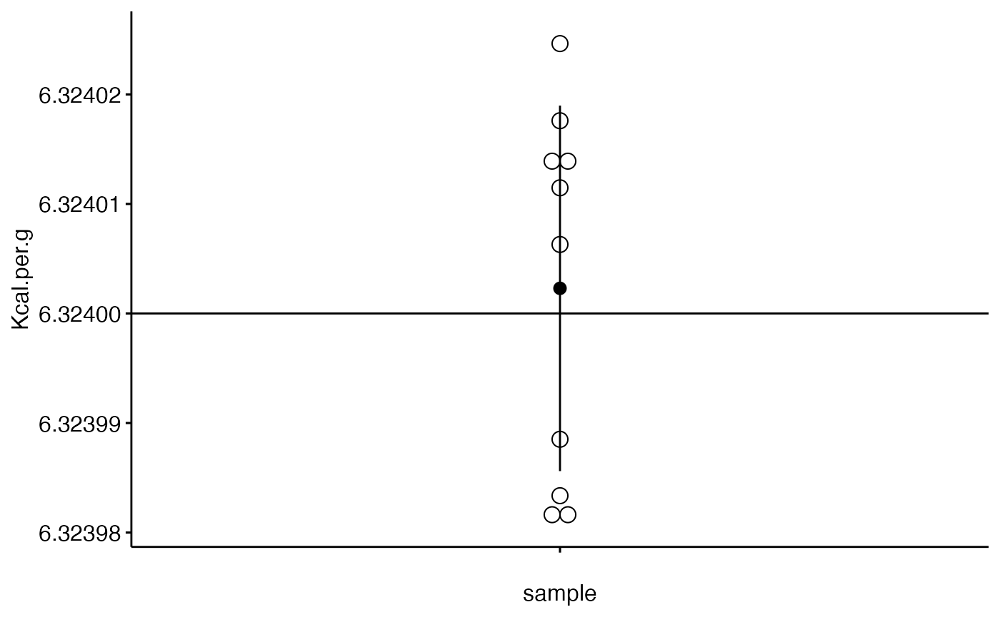
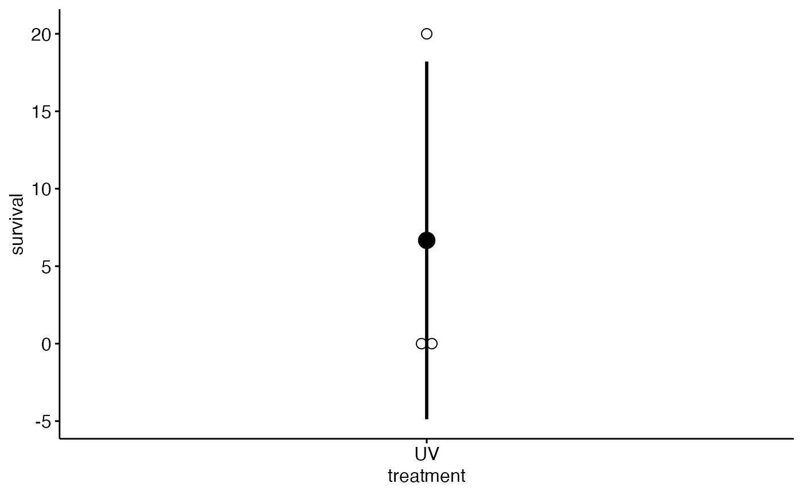
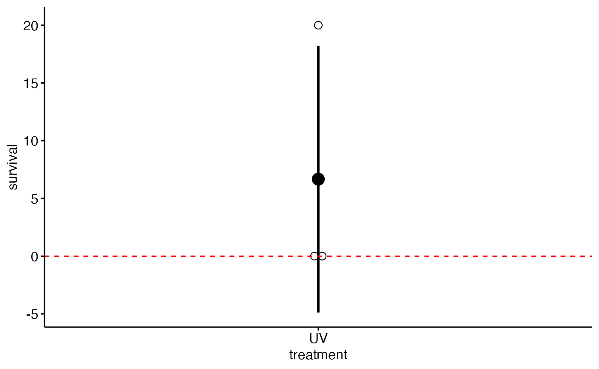
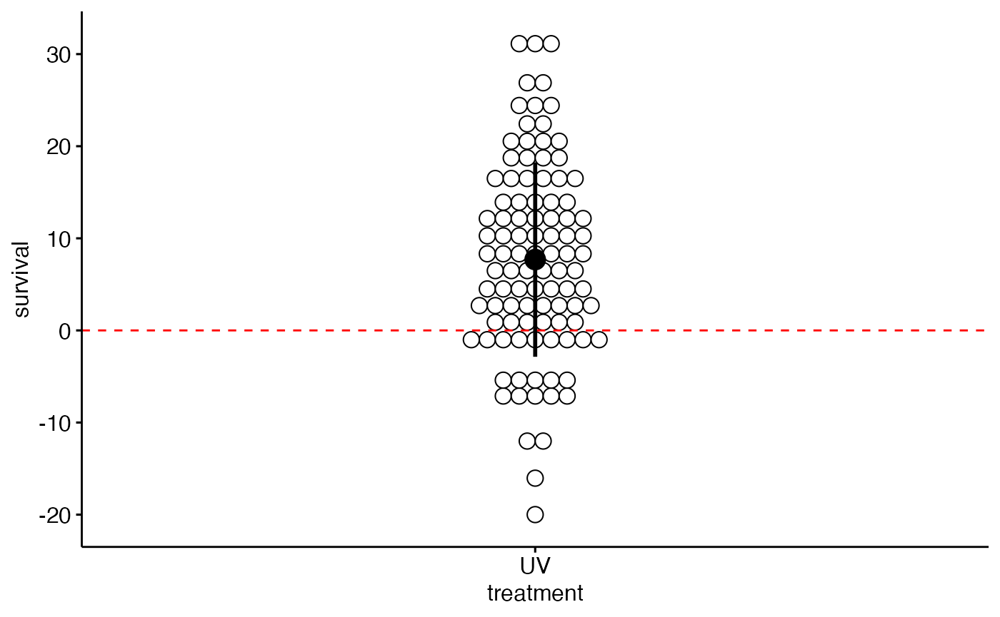

sss-nlb-types_of_data.RmdData if the lifeblood of science. Science is science because it is based on empirical observations about the natural world. There’s lots of other essential components - hypotheses, theories, models, math - but empirical observations are either the input for these other activities or the final arbitrater of their value.
We therefore use the word "data’ a lot in science, and use it as adjective or adverb for many scientidic activities. We do data collection in our labs, record data in lab notebooks or data sheets, make graphs to do data visualization, use stats to do data analysis, and we read pulished paper to evaluate other scientists’ data.
Data, however, can take on many different forms. Just as “data” can be used as an adjective or adverb to describe many scientific activites, there are many adjecives which specify exactly the nature of the data we are working with.
For example, you might want to know if a particular allele (genetic variant) occurs in a strain of E. coli. You therefore do PCR with primers specific to that allele and run out the reaction on a gel. The presence or absence of a DNA band on the gel is a type of qualitative data: evidence for whether the strain possess a certain quality.
[transition]
Frequently we carry out repeated observations or measurements, such as recording how quickly an object falls to calculate accelaration due to gravity, how frequently UV radiation prevents the growth of bacteria, or rating how much damage an herbivore caused to a leaf on a scale from 1 to 10. These numeric data are usually summarized mathematically using means and percentages. If you’re being thorough - and you should – you should characterize variation between repeated observations using standard deviations (SD), standard errors (SE), or confidence intervals (CI).
For example, you could measure the caloric energy in 10 samples and produce a plot like this
#> `stat_bindot()` using `bins = 30`. Pick better value with `binwidth`.
Something that is not always appreciated is that once you start applying math like means and standard deviations to data you need to be mindful of exactly what type of data you are working. Indeed, applying the wrong kind of mathematical operation to specific kinds of data can result in nonsensical output or even erroneous conclusion. This is most usually a problem when percentages are involved or rating scales. In the next section I’ll work through an extended example to show you the kind of problem that can come up. After that we’ll talk about different kinds of data and the right kind of math to deal with them.
Here’s an example of how math can run amok. Let’s say I want to know how frequently a strain of bacteria is killed by UV radiation. I have 3 petri dishes and I dilute out a broth culture of bacteria so that 10 cells end up on each plate. I then put the plates into an incubator the contains a UV light. When I check back on the plates I get the following results:
Plate 1: 2 of the 10 cells grew into colonies Plate 2: 0 of the 10 cells grew into colonies Plate 3: 0 of the 10 cells grew into a colony
So I have 3 data points: 20% survival, 0% survival, and 0% survival. I can calcualte the mean survival rate as
(20%+0%+0%)/3 = 20%/3 = 6.67%
Plugging these numbers into a spreadsheet we can quickly calculate a standard deviation, for example using Excel’s STDEV.S() function like this:
#> [1] 6.666667
#> [1] 11.54701| A | |
|---|---|
| 1 | bacteria.survival |
| 2 | 20 |
| 3 | 0 |
| 4 | 0 |
| 5 | =STDEV.S(A2:A4 |
This tells use that the standard deviation of the data is 11.5. You may have learned that a general rule of thumb is that we should expect abou 60% of our data points to fall within plus or minus 1 SD of our mean.
Its always good to plot data; ideally you want to plot the raw data and your mean, and also the standard deviation as error bars around the mean. For our study we get something like this
#> `stat_bindot()` using `bins = 30`. Pick better value with `binwidth`.
This plot has 3 elements related to the data:
Look carefully at this graph; there’s something peculiar. Can you spot it?
Let’s think about what we plotted. The data points are what they are: 20%, 0% and 0%. Nothing wrong with that. The mean looks ok too; its supposed to represent the “Central tendency” of the data or your best guess about what should happen if you repeated the experiment. For example, if you plated 100 bactiera you expect 6.67% to survive, so about 6 or 7.
What about the error bars? There’s actually something wrong there. Recall that about 60% of our data should between +1SD and -1SD. Another way of thinking about this is that if we ran the experiment many time, we’d expect 60% of data points to be within those error bars, and only 40% higher or lower. Given what error bars represent, there’s something amiss with ours. Let’s add something to the graph to see if you can spot it:
#> `stat_bindot()` using `bins = 30`. Pick better value with `binwidth`.
I’ve added a line at 0. Two of our data points are 0%; 0 is a perfectly valid data point; it could even be the mean if all of our data were 0%. Notice, however, that the error bar extends beyond 0. It actually goes down to about -5%. Recall what I just said about standard deviations: if you repeated your experiment many times (say 100) you’d expect 60% to be plotted within those error bars, and 40% to be higher or lower. What our error bars are implying is that data points could fall between 0 and -5%, and some may even be less than that!
In a picture, this is what this would look like, where each dot is one of 100 imaginary replications of our study.
#> `stat_bindot()` using `bins = 30`. Pick better value with `binwidth`.
Wow! What’s implied by our initial graph is that many experiments could produce negative values, sometimes with “survival” of -20%!
Our simple math of the standard deviation really went afoul when we plugged percentages into it. The solution to this problem is to use a different formulation of the standard deviation that is appropriate for this type of frequency data. We won’t worry about the math, but if we do things correctly we should get error bars which almost go to zero (2%) and still extend up to about 20%.
Statisticians have specific classifications for different types of data. You will see different ways of presenting this these classifications; what I have done here is focused on the most practical features that impact common data analyses.
1)quantitative data (but trying to think of a better name) 2)ordinal 3)frequencies (better name?) 4)counts 5)continuous percentages
skip: nominal (categorical)
for the mathematically inclined :these categories relate to the type of distributions which can be used to describe data
“continous quantitative data”
ranks vs ordinal
“. Ordinal measurements have imprecise differences between consecutive values, but have a meaningful order to those values, and permit any order-preserving transformation.”
counted fractions Tukey
discrete quantitative